Sodium-ion batteries are being developed for stationary storage, light mobility, start-stop systems, power tools, and other applications where cost, resource availability, power, temperature range, and cycle life may matter more than maximum gravimetric energy. These applications do not impose one electrolyte requirement. They create several coupled requirements that must be balanced in the same formulation.
A high-rate electrolyte needs useful bulk conductivity, rapid sodium-ion desolvation, and low interfacial resistance. A wide-temperature electrolyte must remain mobile in the cold without becoming excessively volatile or reactive when hot. A long-life electrolyte must limit interphase dissolution, solvent decomposition, gas generation, and impedance growth. A safe electrolyte must contribute to a stable complete cell, not merely pass a flammability demonstration.
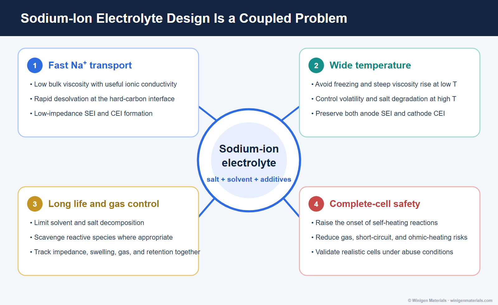
Start with the Target Cell, Not a Favorite Ingredient
Electrolyte screening should begin with the cathode, hard-carbon grade, upper cutoff voltage, areal loading, desired rate, temperature window, cell format, and formation protocol. A formulation that performs well in one sodium-ion platform may fail in another because the dominant limitation has changed.
| Application direction | Likely electrolyte priorities | Useful validation |
|---|---|---|
| Stationary storage | Cost, long calendar/cycle life, gas control, elevated-temperature stability | Long-duration cycling, storage, EIS, pouch swelling |
| Light mobility | Power, cold starting, fast recharge, practical energy | Low-temperature pulse power, rate tests, recovery |
| Start-stop systems | High pulse current, broad temperature range, very high cycle count | Pulse cycling, cold-crank simulation, hot storage |
| Power tools | High discharge rate, fast charge, thermal management | Rate capability, temperature rise, impedance, abuse tests |
Fast Transport Includes Bulk Diffusion and Interfacial Kinetics
Bulk ionic conductivity is important, but it is only one step in sodium transport. Sodium ions must leave the cathode, cross the cathode-electrolyte interphase, diffuse through the solvating liquid, shed part of their solvation shell, cross the hard-carbon SEI, and enter the anode. Any one of these steps can dominate polarization.
Low-viscosity solvents can improve bulk transport, but weak solvation is not automatically beneficial if salt dissociation or interphase quality suffers. Highly dissociated salts may improve carrier availability, while additives can reduce interfacial resistance by forming a more favorable SEI or CEI. The formulation must balance transport and stability rather than maximize one isolated property.
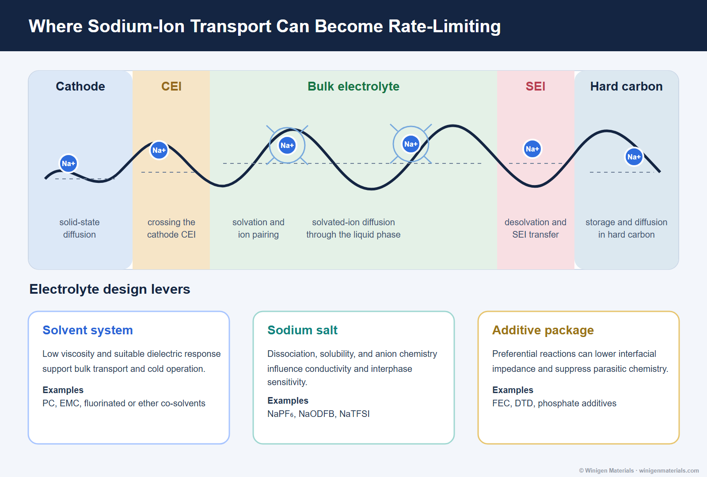
Materials That Support the Screening Matrix
Winigen's portfolio includes sodium salts, carbonate solvents, fluorinated solvents, and electrolyte additives that can be organized into controlled screening matrices. Chemical structures link to the corresponding product pages.
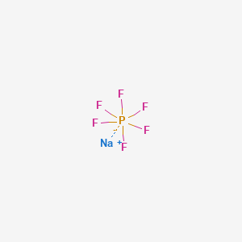
Sodium hexafluorophosphateNaPF6 baseline salt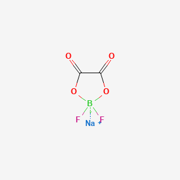
Sodium difluoro oxalate borateNaODFB interphase-focused salt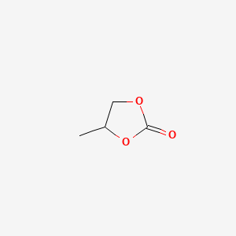
Propylene carbonatePC carbonate solvent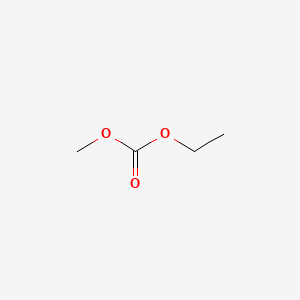
Ethyl methyl carbonateEMC lower-viscosity co-solvent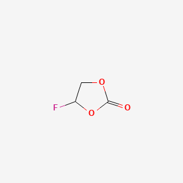
Fluoroethylene carbonateFEC interphase additive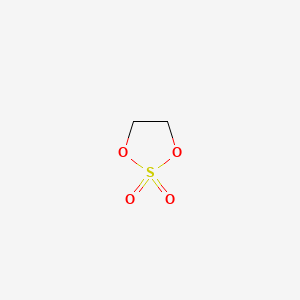
1,3,2-Dioxathiolane 2,2-dioxideDTD sulfur-containing additive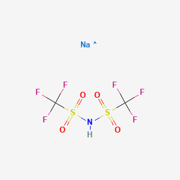
Sodium bis-(trifluoromethanesulfonyl)-imideNaTFSI comparison salt Electrolyte additive portfolioScreen interphase, gas and stability effects
Electrolyte additive portfolioScreen interphase, gas and stability effects
Wide-Temperature Operation Requires Different Controls at Each Extreme
At low temperature, viscosity rises, conductivity falls, desolvation slows, and interfacial resistance becomes more important. A formulation can show acceptable room-temperature conductivity yet still lose power because sodium transfer through the SEI or hard-carbon pores becomes too slow.
At elevated temperature, the problem changes. Salt and solvent decomposition accelerate, volatile components contribute to pressure, interphases can dissolve or restructure, and gas generation becomes more severe. The same additive that improves cold kinetics may not provide sufficient hot-storage stability.
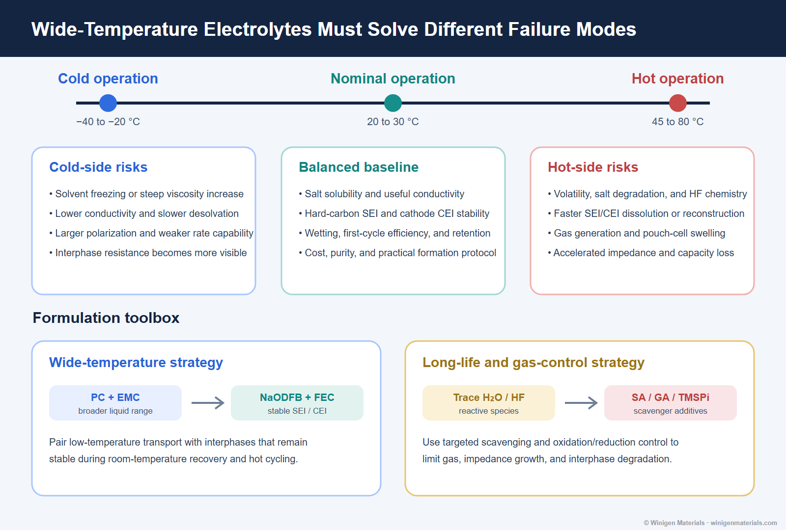
Interphase Stability, Water Control, and Gas Are Connected
Trace water is not merely a storage specification. In NaPF6-based electrolytes it can contribute to hydrolysis and HF formation, altering interphase chemistry and reproducibility. Solvent reduction and oxidation can also generate reactive intermediates and gaseous products. Their importance depends on electrode chemistry, potential, temperature, formation, and state of charge.
Additives may reduce gas by forming more protective interphases, scavenging reactive species, or changing the dominant decomposition pathway. However, a lower gas volume is not enough by itself. The additive must also preserve first-cycle efficiency, impedance, rate performance, retention, and high-temperature stability.
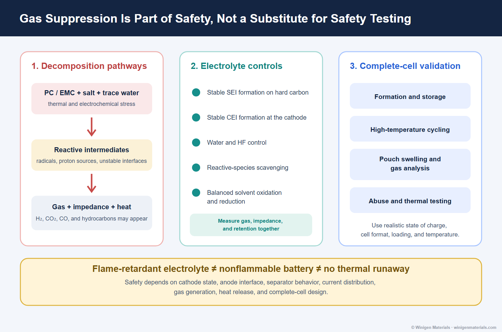
A Practical Screening Matrix
| Stage | Controlled variables | Measurements |
|---|---|---|
| Baseline selection | One cathode, one hard carbon, fixed loading and formation | Conductivity, water, first-cycle efficiency, EIS |
| Salt comparison | Constant solvent and additive package | Solubility, corrosion, impedance, retention, gas |
| Solvent comparison | Constant salt concentration and additive level | Viscosity, low-temperature rate, wetting, hot storage |
| Additive screening | Single-additive then rational combinations | Formation, SEI/CEI impedance, gas, retention |
| Temperature validation | Cold discharge/charge and hot cycle/storage protocols | Polarization, recovery, swelling, resistance growth |
| Pouch-cell validation | Realistic electrolyte loading, pressure and SOC | Gas volume/species, thermal response, repeatability |
Bottom Line
Sodium-ion electrolyte design should not be reduced to a conductivity ranking or a single additive claim. High rate, wide temperature, long life, gas control, and safety depend on transport through the bulk electrolyte and both electrode interphases, as well as water control, formation, cell format, state of charge, and temperature.
Winigen Materials supports sodium-ion development with sodium electrolyte salts, battery solvents, electrolyte additives, hard carbon, and custom formulation support for structured material and cell screening.
References
- Ponrouch et al., Towards high energy density sodium ion batteries through electrolyte optimization, Energy & Environmental Science, 2013.
- Komaba et al., Electrochemical Na Insertion and Solid Electrolyte Interphase for Hard-Carbon Electrodes and Application to Na-Ion Batteries, Advanced Functional Materials, 2011.
- Dahbi et al., Effect of hexafluorophosphate and fluoroethylene carbonate on electrochemical performance and the surface layer of hard-carbon electrodes in sodium-ion batteries, Electrochemistry Communications, 2014.
- Barnes et al., A non-aqueous sodium hexafluorophosphate-based electrolyte degradation study: Formation and mitigation of hydrofluoric acid, Journal of Power Sources, 2019.
All original diagrams on this page are © Winigen Materials unless otherwise noted. They may not be reproduced, modified, or redistributed without permission.